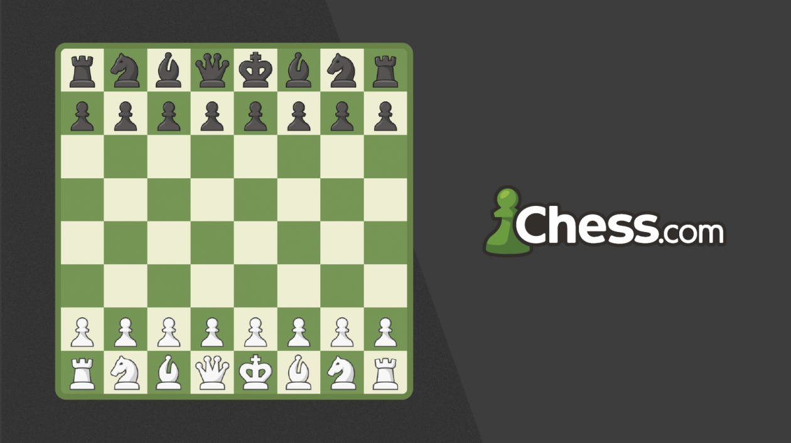

O xadrez está atualmente crescendo em popularidade em todo o mundo. Este antigo jogo de estratégia atraiu um público diversificado e apaixonado, em parte graças à acessibilidade proporcionada pela Internet e à promoção contínua do esporte.
A ascensão do xadrez online, impulsionada por plataformas como o Chess.com e o Lichess, permitiu que jogadores de todas as idades e níveis de habilidade participassem de partidas, aprendessem táticas e competissem em torneios globais. Além disso, o surgimento de streamers de xadrez e partidas transmitidas ao vivo em plataformas como o Twitch deu ao jogo uma presença considerável na cultura pop.
O xadrez também é usado na educação, com muitas escolas e programas educacionais usando o xadrez como uma ferramenta para desenvolver as habilidades cognitivas, o raciocínio lógico e a paciência das crianças. Isso ajuda a expandir a base de jogadores e aumentar o interesse pelo xadrez.
